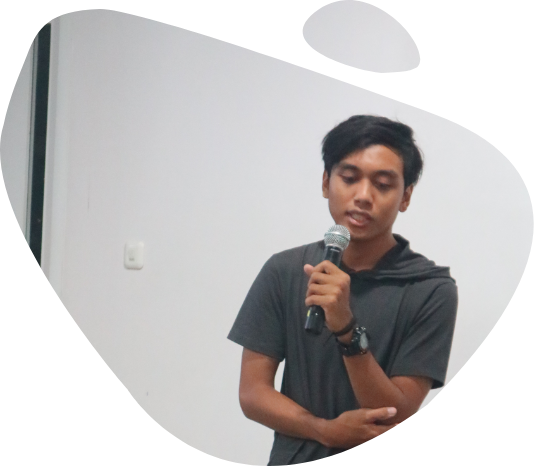

SurabayaDev lahir pada tahun 2014 dari
gagasan bersama yang di inisiasi oleh Achmad
Fatoni, Arryangga Aliev Pratama, Antoni Putra
dan atas keinginan teman teman di
perusahaan tempat kerja yang sama saat itu
yang ingin membuat sebuah perkumpulan
dalam sebuah kelas diskusi. Sempat terpikir
untuk di beri nama Laravel Surabaya, namun
perkembangan jaman semakin maju
framework laravel juga akan terganti dengan
yang baru, maka dari itu tepat pada bulan
april acara pertama lahirlah Surabaya
Developer atau disingkat SurabayaDev.

Kegiatan rutin SurabayaDev diadakan setiap
bulan. Lokasi acara SurabayaDev pertama adalah
Dilo Surabaya (Telkom Ketintang 2014-2018).
Selain Dilo Surabaya lokasi co working space
seperti Sub Co juga pernah menjadi tempat acara
SurabayaDev. Namun sejak akhir tahun 2017
SurabayaDev berkembang untuk mencoba hal
baru berkolaborasi dan mendatangi lokasi lokasi
baru seperti lembaga atau institusi pendidikan
untuk lebih dekat dengan teman teman surabaya
dev yang masih berstatus pelajar,mahasiswa
maupun umum.
Seiring perkembangan waktu saat ini Surabaya
Dev memiliki struktur organisasi dan program
kegiatan. Memiliki lebih dari 1500 anggota grup
yang terdapat di forum telegram.